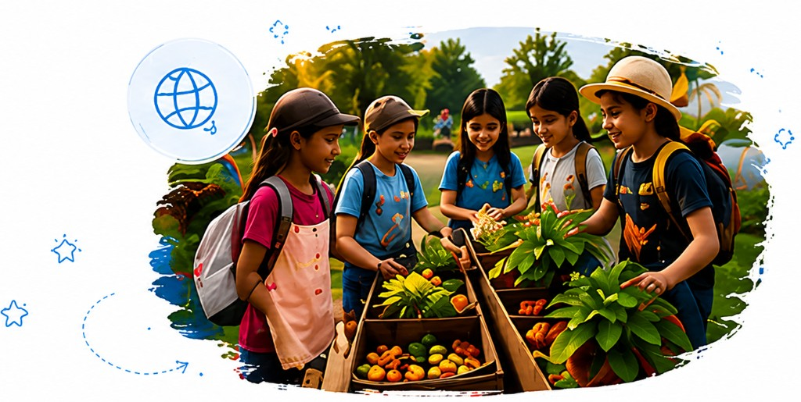
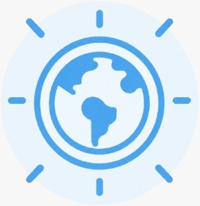

Community Adventures
Explore. Discover. Connect.
Children explore their community through real-life experiences. They visit places, meet inspiring people, learn new things, and discover ways we can all work together to make our community better.

Children Explore
Community Helpers
Nature & Outdoors
Culture & Arts
Local Businesses
Skills Children Naturally Build
- Curiosity
- Communication
- Adaptability
- Social awareness
- Appreciation
Children Grow
 Shape the Experience
Shape the Experience
Children suggest places to visit, ask questions, and help plan our adventures.

Making an Impact
Children understand their community better and discover ways to contribute, support others, and help it grow.
What Parents Should Know
Sessions include field visits, guest speakers, and hands-on activities in the community. Children observe, ask questions, and reflect on what they learn at each stop.
We provide journals, maps, and activity guides for each adventure. Children are encouraged to wear comfortable clothing and bring a water bottle. Any special items needed for a visit are shared in advance.
All outings are fully supervised with clear safety guidelines. Permission forms, appropriate adult-to-child ratios, and route planning are in place for every adventure.
Community Adventures runs as part of Bright Dreamers experiences throughout the year. Visit our Get Involved page or contact us to learn about upcoming sessions, age groups, and how to register your child.
Every adventure starts with a curious mind.
Learn More About This Experience